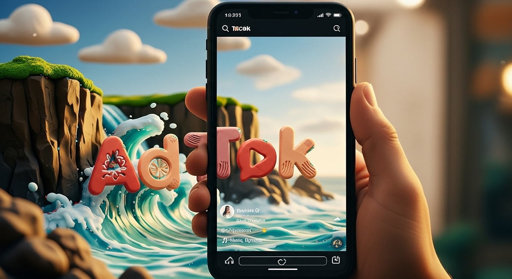

TikTok Growth Master Manual
App‑style manual
Psychology-Driven Framework
- Identity-based hooks → dopamine triggers
- Jobs-to-be-Done → customer motivation
- Behavioral economics → conversion optimization
- Flywheel model → sustainable growth
Average Watch Time — last 14 posts
30-Day Execution Schedule
TikTok Growth Master Manual — Research Portals
Tap into the extended field guide and supporting operational hub for deeper growth tactics, execution templates, and cross-team collaboration.
Prefer opening in a new tab? Explore the Perplexity research brief or the Notion execution workspace.
Audio Companion — TikTok Algorithm Secrets
Listen to the narrated breakdown of hooks, SEO structure, and 2025 creator playbook highlights while you work through the manual.
Behavioral Psychology Framework
- Anchoring: First impression pricing creates value perception
- Social Proof: "30K students using this system" builds credibility
- Scarcity: "Only 2 left" triggers urgency and FOMO
- Loss Aversion: "Don’t miss out" 2x more powerful than gains
Cognitive Triggers
Pattern Interrupt
+156% Hook Rate
Curiosity Gap
+89% Completion
Identity Bridge
+240% Shares
Neurological Optimization
- Dopamine Timing: 3-4 reward spikes per video
- Arousal Maintenance: High-activation emotions throughout
- Pattern Completion: Incomplete loops requiring resolution
- Tribal Belonging: In-group vs out-group dynamics
Identity Bridge Script
Hook: "POV: You finally got your life together"
Psychology: Identity aspiration + transformation triggers
Reach: 500K-2M views
Controversial Authority
Hook: "Unpopular opinion that made me $100K"
Psychology: Pattern interrupt + contrarian positioning
Reach: 750K-3M views
Curiosity Loop Mystery
Hook: "This AI app is actually scary good"
Psychology: Fear + intrigue + deferred gratification
Reach: 1M-5M views
Social Proof Cascade
Hook: "When 50K people try the same workout"
Psychology: Herd behavior + FOMO + social validation
Reach: 2M-8M views
Forbidden Knowledge Script Template
Authority (0-8s): "Bank employee reveals..." + credentials
Secret (8-18s): "97% of customers" + specific problem
Solution (18-25s): "Here’s exactly what to ask..."
Exclusivity (25-30s): "Follow for more insider secrets..."
Marketing Mix Modeling (MMM)
- Scope: Strategic, big-picture view across all channels
- Timeframe: Quarterly/annual analysis for budget allocation
- Strength: Measures TV, radio, digital + external factors
- Privacy-First: Uses aggregated data, not user tracking
Multi-Touch Attribution (MTA)
- Scope: Tactical, granular customer journey view
- Timeframe: Real-time digital campaign optimization
- Strength: Precise touchpoint credit assignment
- Challenge: Privacy changes limit effectiveness
Hybrid Data Strategy: MMM + MTA
MMM → Annual budget allocation across marketing mix
MTA → Daily optimization within validated digital channels
Result → 30% ROI improvement through strategic + tactical alignment
Digital Product Profit Analysis
Templates & Planners: 85-95% margin, Fast turnaround
eBooks & Guides: 70-90% margin, Medium success rate
Online Courses: Variable margin, High effort required
Templates Strategy
- Turnaround: Hours to days creation time
- Margin: 90%+ after platform fees
- Success Key: Hyper-specific niche targeting
- Examples: "Notion for Video Editors"
Platform Economics
- Etsy: $15 product = $13 profit (87%)
- Gumroad: 87% after 10% fee + processing
- Amazon KDP: 70% royalty ($2.99-$9.99)
- Udemy: Only 37% on marketplace sales
Success Factors
- Niche Focus: Specific problem + audience
- Quality Design: Professional aesthetics matter
- SEO Optimization: Platform search ranking
- Social Proof: Reviews and testimonials
Flywheel vs Funnel Model
- Funnel: Linear path, customer as endpoint
- Flywheel: Circular, customer at center
- Stages: Attract → Engage → Delight
- Result: Delighted customers drive growth
Jobs-to-be-Done Framework
- Core Principle: Customers "hire" products for jobs
- Example: "I need a quarter-inch hole, not a drill"
- Focus Shift: From "Who" to "What job"
- Benefit: Uncovers deeper motivations
Modern Brand Strategy: Intersectionality & Meaning
83% of consumers expect companies to shape ESG practices
79% of Gen Z switch brands based on shared values
80% prefer brands aligned with their causes
20% revenue increase + 50% less turnover with effective CSR